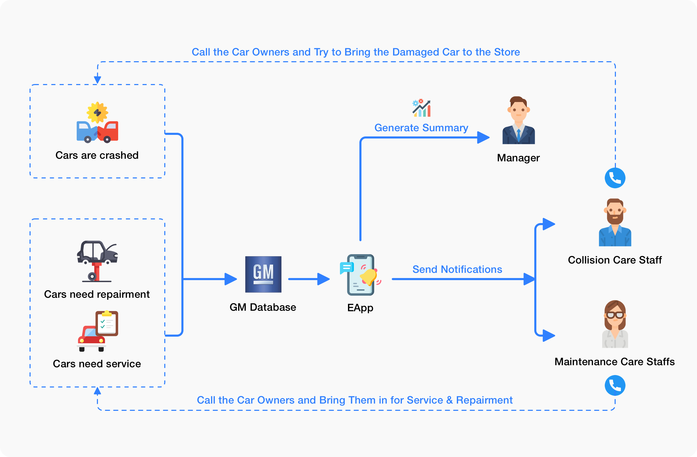

Context
DURATION: 2019/12 – 2020/12, 5 Launches, 2 – 3 weeks for design per launch
SKILLS: Contextual Inquiry, Product Direction, System-wide prototype, Collaboration
TOOLS: Axure, Sketch, Lanhu
Problems
EAPP is a B2B mobile app used by car dealerships. When I receive this product, we have a demo version of it. Less than 20 car dealerships were using it and testing it. My task is to redesign this product and make it a product that is valuable for our users. In this way, we can expand our market and sell this EAPP to more car dealerships.
But what is a “better” EAPP? I need to first find out what EAPP does and what our product goal is. Therefore, I tried to find a clue by analyzing the initial APP and conduction interviews with important stakeholders.
Key Problems: 1.Information structure is not correct regarding the defined product goal. 2.There are gaps between the real-world user flow and the app user flow. 2.It is hard to search for information on the app
Design
Impact
The user has grown from 20 dealerships to about 3000.
We earn $150,000 more from this app, and it was one-quarter of our departments’ revenue in the year 2020. I was really proud of that.
EAPP impacted the behaviors of General Motors car dealers. Many of them are now hiring new employees for customer connection using the EAPP. It has a positive impact on GM’s brand image.